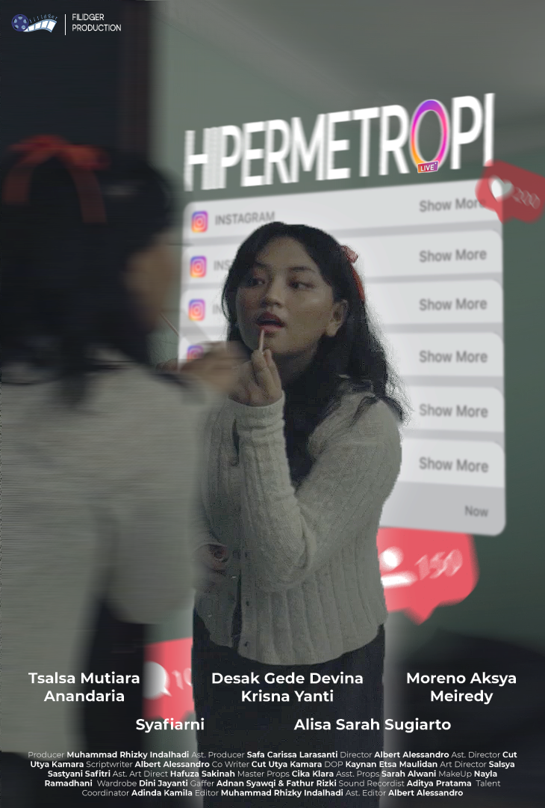
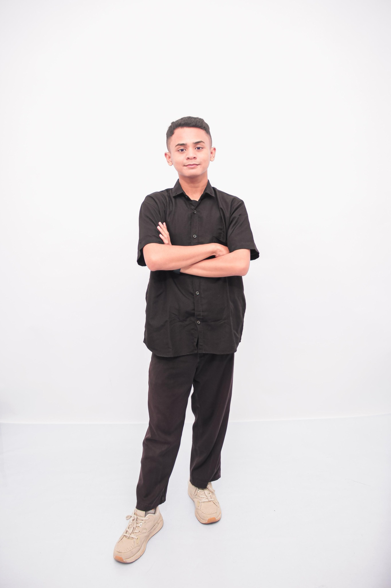
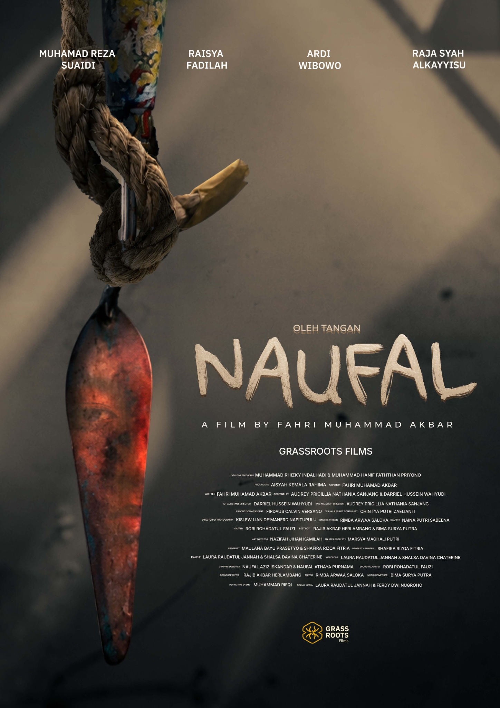
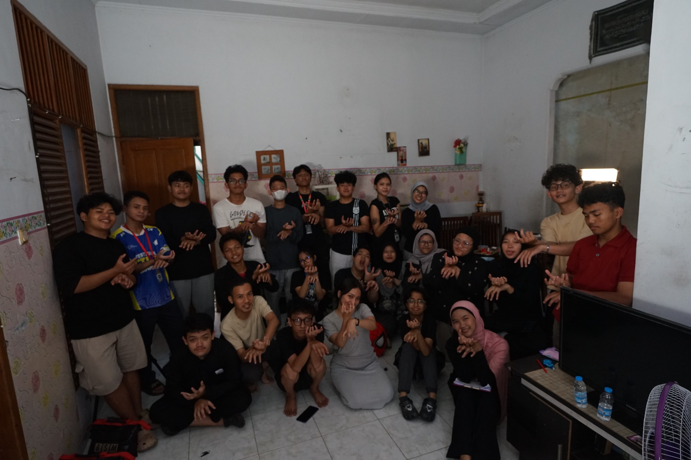
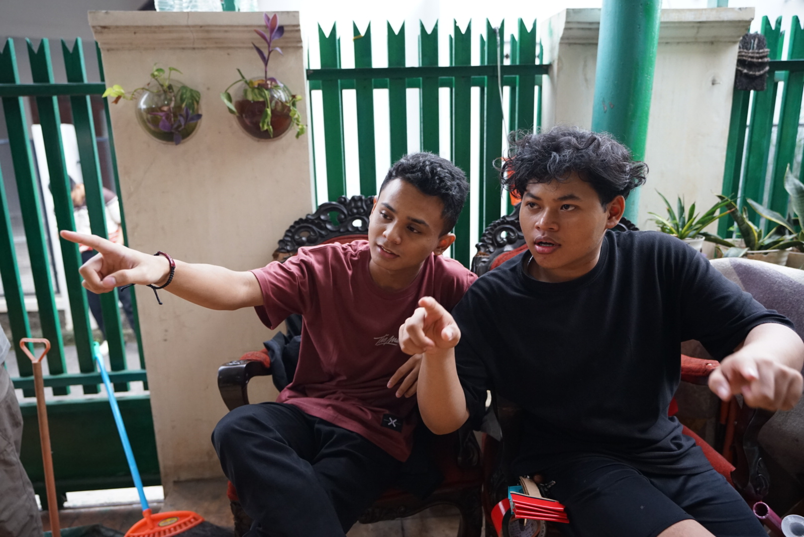
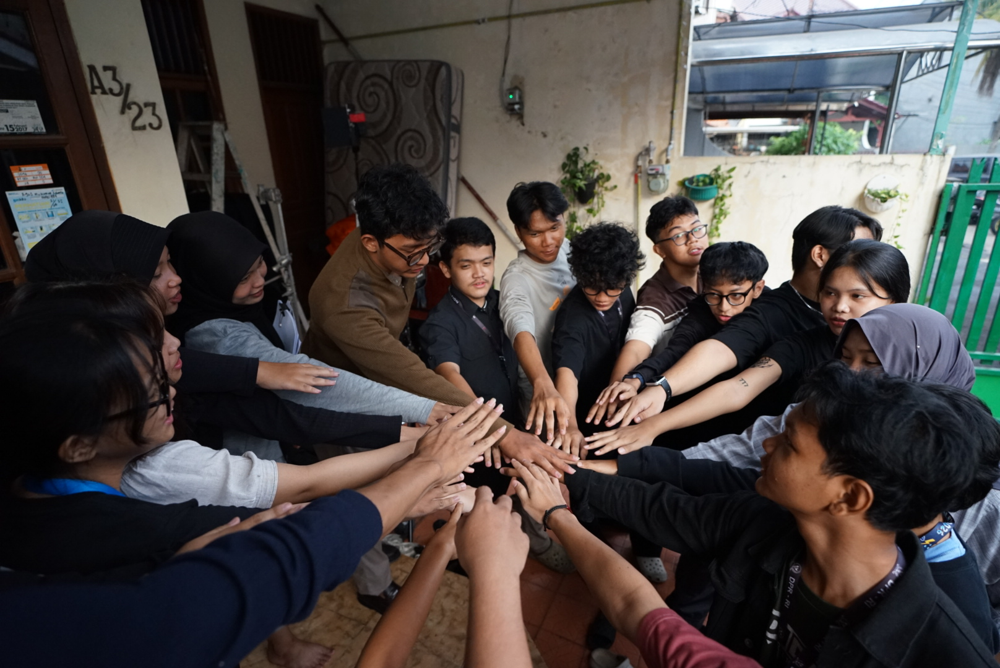
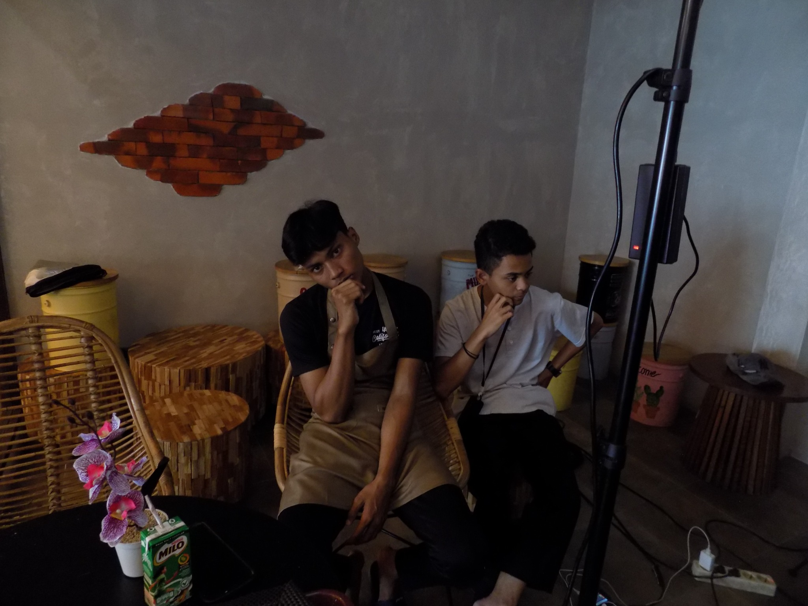
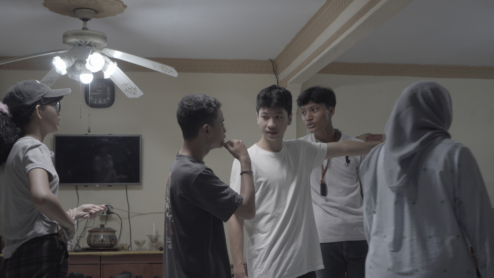

Hipermetropi
Pimpinan Produksi · Filidger Production
Film pendek · 2024
Halo, saya Muhammad Rhizky Indalhadi — kreator visual yang bergerak di antara film, fotografi, videografi, editing, dan digital experience. Saya suka mengubah ide menjadi karya yang punya cerita.

Berangkat dari rasa ingin tahu, dibentuk lewat pengalaman, dan terus berkembang di setiap proyek yang dikerjakan.
Saya merupakan individu kreatif dengan pengalaman dalam fotografi, videografi, penyuntingan video, produksi multimedia, dan pembuatan konten digital.
Terbiasa mendokumentasikan acara, mengembangkan konten untuk media sosial dan pemasaran digital, hingga terlibat dalam produksi film pendek. Saya juga memiliki ketertarikan pada desain website yang responsif dan nyaman digunakan.
Dua proyek film yang menjadi bagian dari perjalanan saya dalam produksi audiovisual — dari koordinasi produksi sampai proses film ditayangkan.

Pimpinan Produksi · Filidger Production
Film pendek · 2024

Executive Producer · Grassroots Films
Film pendek · 2026
Peran dan informasi proyek ditampilkan berdasarkan CV serta portofolio. Klik poster untuk melihat gambar lebih besar.
Cerita di balik layar juga bagian dari karya. Momen kolaborasi, diskusi, dan proses yang membentuk hasil akhir.

GRASSROOTS FILMS / ALL CREW & TALENT
DISCUSSION
COLLABORATION
HIPERMETROPI
IN THE PROCESSPengalaman lintas produksi, konten digital, dokumentasi, dan multimedia yang membantu membangun cara kerja kreatif yang adaptif.
Mengelola Instagram dan TikTok, merancang visual promosi, membuat konten foto-video, memotret kegiatan perusahaan, menyunting video promosi, dan memperbarui website. Turut memotret serta menyunting gambar menu untuk Ipoh Heritage.
Mengoordinasikan kebutuhan teknis produksi dan mendukung kegiatan sponsor untuk film pendek Oleh Tangan Naufal, berkolaborasi dengan tim hingga proses penayangan.
Membuat konten perjalanan untuk layanan umrah serta mendokumentasikan keberangkatan dan kepulangan jemaah melalui foto dan video.
Mendukung fotografer dan videografer dalam pemotretan pernikahan serta pertunangan, termasuk membantu menyiapkan peralatan.
Menyunting album foto pernikahan dan pertunangan, membuat konten acara, serta membantu proses pemotretan dan pengambilan video.
Memotret peserta di bilik foto profil dalam acara Sony Alpha Festival 2024.
Mendokumentasikan kegiatan sekolah dan acara instansi, menyunting konten untuk Direktorat Pendidikan Menengah dan Pendidikan Khusus, mengoperasikan live streaming, serta mendukung program Pendidikan Profesi Guru.
Pencapaian yang jadi pengingat bahwa proses kreatif bukan cuma soal hasil, tapi juga konsistensi dan keberanian untuk mencoba.
Gerakan Mahasiswa Politeknik Negeri Jakarta · 2026
AMIKOM Video Competition · 2024 · Film “Hipermetropi”
Jurusan Penyiaran dan Perfilman · SMK Negeri 48 Jakarta
SMK Negeri 48 Jakarta · Tahun ajaran 2024/2025
Badan Nasional Sertifikasi Profesi (BNSP) · 2025
Pengalaman sebagai fotografer bilik foto profil, menggunakan Sony Alpha 7R V.
Perangkat yang digunakan untuk mengubah ide, footage, foto, dan konsep menjadi output visual.
Video editing & storytelling
Photo editing & layout
Color grading & photo workflow
Short-form & social content
Graphic design & presentation
Website building & publishing
Sarjana Ilmu Komunikasi · Sedang ditempuh
IPK saat ini: 4,00 / 4,00
Jurusan Penyiaran dan Perfilman
Nilai rata-rata: 90,32 / 100